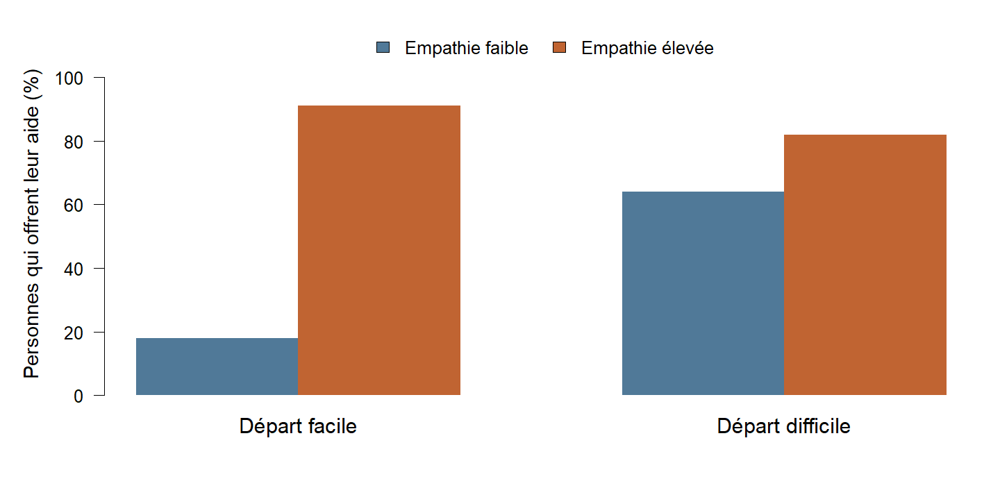
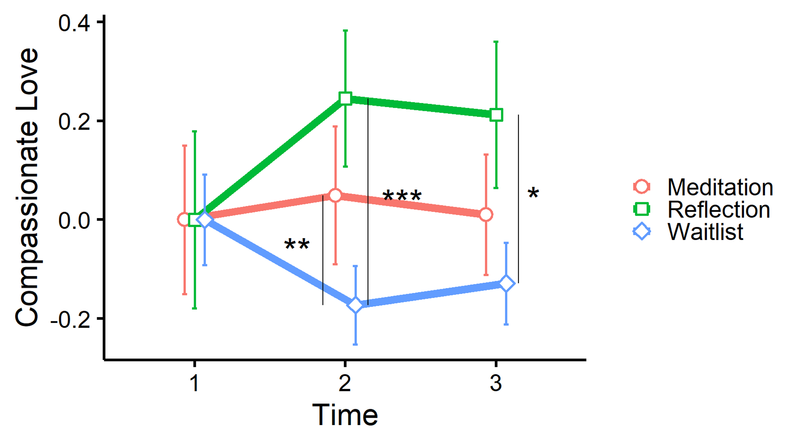
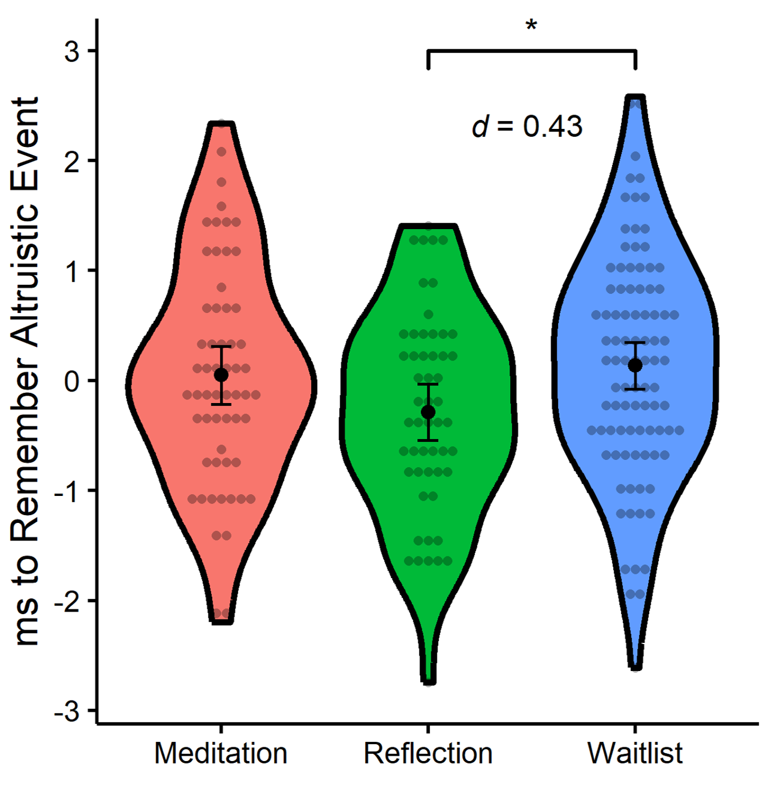
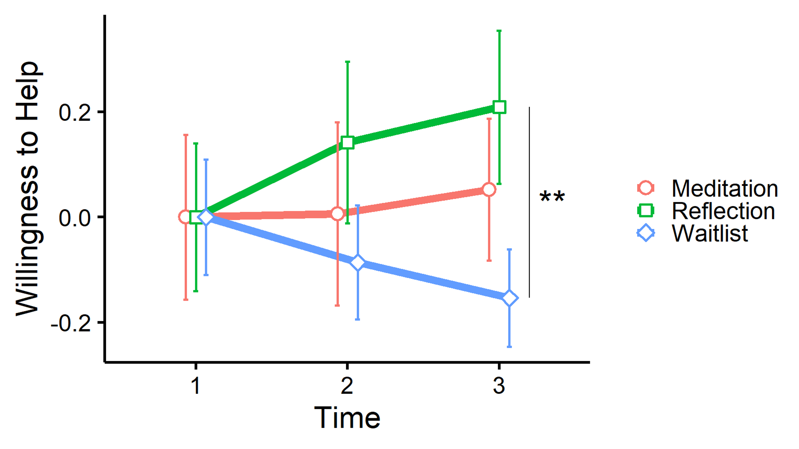
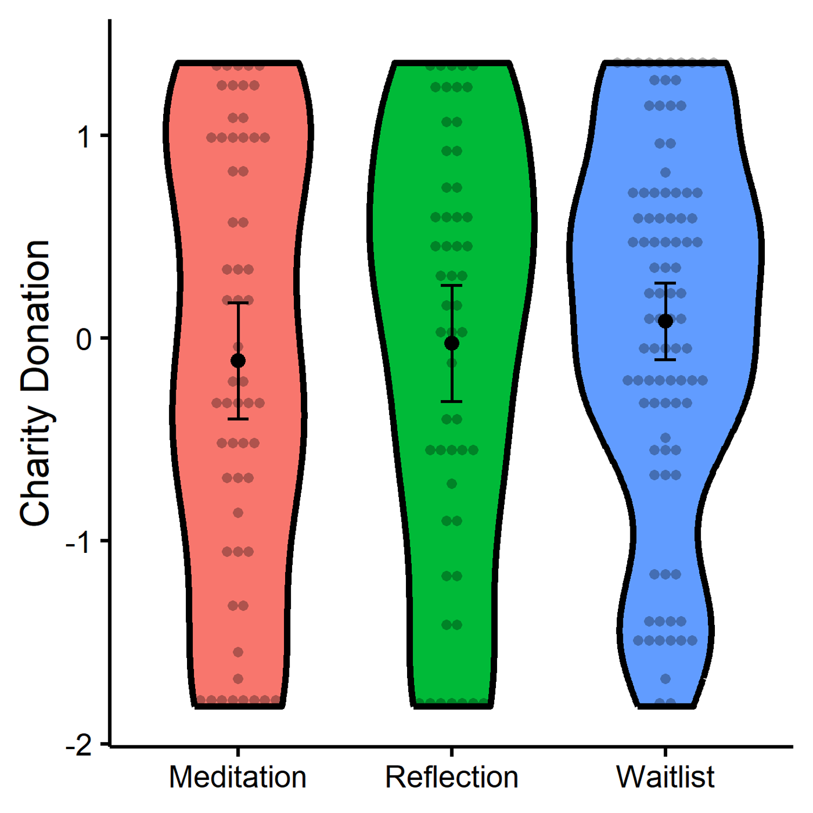
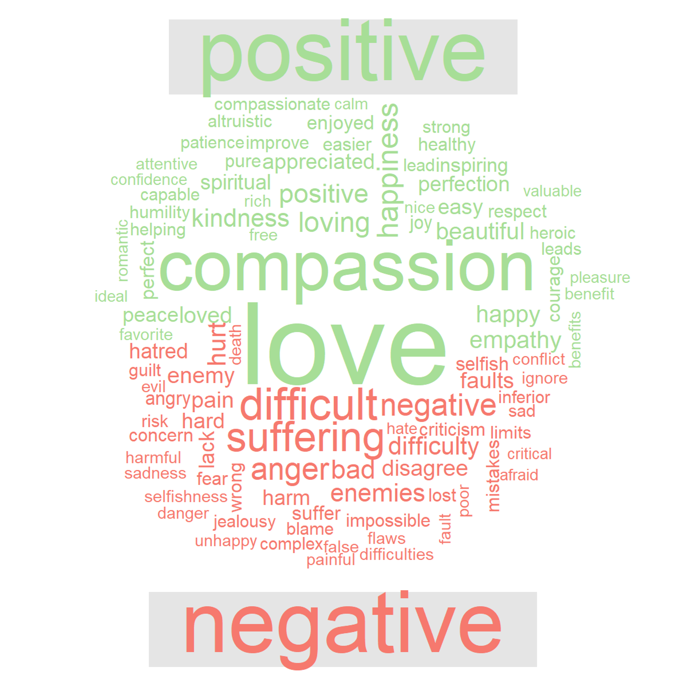

Examen 2 · Deux estimations, puis les résultats de la classe.
Plan de la séance
L’aide, l’altruisme et les motivations
Les témoins et les obstacles à l’aide
La coopération et les conséquences de l’aide
Pour commencer : voir une personne en difficulté suffit-il pour l’aider?
L’entraide
Ramdam · saison 1, épisode 39 · Surprise, surprise… · 0:18–1:27 · Ouvrir la vidéo.
Le comportement d’aide
Les comportements prosociaux comprennent les gestes visant à bénéficier à autrui, comme l’aide, le partage et la coopération.
Le comportement d’aide est un geste social posé au bénéfice d’une autre personne, quelle que soit la motivation de la personne aidante.
Dans l’extrait : Sélina veut vendre des CD de l’album de l’école pour contribuer au financement de la classe-neige. Manolo lui propose de les graver.
Qu’est-ce qui pourrait motiver son geste?
L’altruisme et les motivations
L’altruisme est une conduite au bénéfice d’autrui sans récompense attendue. Une motivation altruiste vise le bien d’autrui.
Même geste : graver les cédéroms.
« Je veux que Sélina puisse livrer ses cédéroms à temps. »
« Je veux qu’on me remarque pour mon engagement. »
« Je veux qu’elle m’aide à monter ma prochaine vidéo. »
Le geste est visible; le but demande d’autres indices.
Les motivations et le choix d’aider
Variante fictive : Mariane et Simon aident Sélina à préparer la vente des CD pour la classe-neige.
En privé
Manolo grave des copies avant que Mariane et Simon arrivent.
Devant les autres
Manolo grave les mêmes copies sous leurs yeux.
L’empathie et la détresse personnelle
Une émotion empathique est une réaction de compassion qui correspond à ce que vit autrui.
La détresse personnelle est un malaise centré sur sa propre réaction à la souffrance observée.
Sélina semble dépassée :
Chercher ce qui pourrait lui être utile.
Vouloir surtout ne plus ressentir ce malaise.
L’empathie et la possibilité de partir
Une personne reçoit une demande d’aide.
Deux questions pour prédire :
Se représente-t-elle ce que vit la personne?
Peut-elle facilement quitter la situation?
Si le but est le bien d’autrui, partir règle-t-il le problème?
L’empathie et la décision d’aider

Lorsque partir est facile, l’aide est nettement moins fréquente avec une faible empathie qu’avec une empathie élevée. Lorsque partir est difficile, l’écart est plus faible.
Batson et coll. (1981), résultats rapportés dans le manuel, tableau 10.2, p. 317.
La disposition à la positivité
Une orientation positive relativement stable envers soi, la vie et l’avenir :
Estime de soi
Avoir une appréciation positive de soi.
Optimisme
Anticiper des résultats favorables.
Satisfaction de vie
Évaluer positivement sa vie dans son ensemble.
Les recherches longitudinales associent cette disposition à davantage de comportements prosociaux au fil du temps.
Luengo Kanacri et coll. (2017) ; manuel, p. 312.
La personnalité prosociale et la bonté
Facteur
Ce que les recherches suggèrent
Personnalité prosociale (Penner et coll.)
Empathie, responsabilité sociale, souci du bien-être d’autrui, raisonnement moral, détresse personnelle et altruisme : ensemble, ces dimensions permettent de prédire une tendance régulière à aider.
Bonté (psychologie positive)
Force de caractère qui consiste à se soucier d’autrui et à agir pour son bien. Dans une étude, la bonté prédit l’aide spontanée, contrairement à l’agréabilité (Big Five).
Penner et coll. (1995) ; Peterson et Seligman (2004) ; Lefevor et Fowers (2016) ; manuel, p. 312.
L’intelligence émotionnelle et l’aide
Quatre habiletés (modèle de Mayer et coll.) :
Identifier ses émotions et celles des autres.
Utiliser les émotions pour mieux réfléchir.
Comprendre leur signification et leur évolution.
Réguler ses émotions et celles d’autrui.
Pourquoi cela favorise-t-il l’aide? Mieux décoder la situation, éprouver de l’empathie et offrir un soutien adapté.
Les études rapportent des liens avec l’altruisme, la qualité du soutien émotionnel et les comportements prosociaux au travail.
Mayer, Caruso et Salovey (2016) ; Lopes et coll. (2004) ; manuel, p. 313.
L’humeur et le calcul des couts
Effet d’être de bonne humeur — Dans plusieurs situations, une humeur positive favorise l’aide.
Soulagement des émotions négatives — Aider peut atténuer son propre malaise.
Activation–cout–bénéfice — En situation d’urgence, l’activation ressentie et les couts anticipés orientent la façon d’y répondre.
Pour la vente des CD, qu’est-ce qui change si aider prend cinq minutes ou tout l’après-midi?
Les couts pour la personne aidante et pour autrui
Situation : Sélina doit terminer la gravure de ses CD avant 16 h. Manolo aimerait l’aider, mais il a un rendez-vous à 15 h. Simon est disponible.
Comportement
Cout pour Manolo
Conséquence pour Sélina
Aider directement jusqu’à 16 h
Manquer son rendez-vous
Recevoir de l’aide
Demander à Simon de l’aider
Prendre quelques minutes pour le contacter
Recevoir potentiellement de l’aide
Ne rien faire
Aucun temps consacré à l’aide
Risquer de ne pas terminer ses CD
Les couts anticipés influencent la décision d’aider et la forme d’aide choisie.
Les normes et le comportement d’aide
Les normes sociales sont des attentes partagées à propos de ce qu’on devrait faire dans une situation.
Réciprocité : rendre l’aide reçue.
Responsabilité sociale : aider une personne qui dépend de notre aide, même sans retour attendu.
Équité : corriger un déséquilibre dans la contribution ou les bénéfices des personnes.
Justice : apporter de l’aide selon ce qu’on estime que la personne mérite.
Les normes d’aide en comparaison
Dans nos exemples, Sélina et ses amis préparent des CD pour la vente de la classe-neige.
Norme
Exemple
Réciprocité
Sélina a aidé Simon à monter une vidéo. Simon l’aide à graver les CD pour lui rendre ce service.
Responsabilité sociale
Mariane ne sait pas utiliser le logiciel de gravure. Simon l’aide parce qu’elle a besoin de lui, sans attendre de retour.
Équité
Sélina doit graver 30 CD et Simon seulement 10. Simon prend en charge 10 des CD de Sélina pour rééquilibrer leur travail.
Justice
Une panne a retardé la gravure des CD de Sélina. Manolo estime qu’elle mérite de l’aide et vient lui donner un coup de main.
Les modèles et l’apprentissage de l’aide
Le modelage consiste à apprendre en observant une personne dont on peut reprendre la conduite.
Mariane voit Simon offrir à Sélina de graver un disque avec elle ou de s’en charger. Plus tard, Mariane propose ce même choix à une autre personne qui aide à la vente.
En fin de journée, on voit Manolo remettre à Sélina des copies du cédérom qu’il a gravées. Quelle observation permettrait le mieux de distinguer une motivation altruiste d’une recherche de reconnaissance?
A. Le nombre de copies qu’il a gravées.
B. Le fait qu’il grave aussi des copies quand son aide restera anonyme.
C. Le fait que les copies fonctionnent.
D. Le nombre de personnes qui achètent le cédérom.
Les normes d’aide
Sélina a aidé Simon à monter une vidéo. Simon vient préparer les cédéroms parce qu’il souhaite lui rendre ce service. Quelle norme décrit le mieux son geste?
A. La norme de responsabilité sociale.
B. La norme d’équité.
C. La norme de réciprocité.
D. La norme de justice.
L’empathie et la possibilité de partir
Dans l’étude de Batson vue en classe, pour quel groupe la possibilité de partir facilement a-t-elle le plus changé la fréquence de l’aide?
A. Le groupe où l’empathie suscitée était faible.
B. Le groupe où l’empathie suscitée était élevée.
C. Les deux groupes ont changé à peu près autant.
D. Aucun des deux groupes n’a montré de changement.
Le modelage
Pendant la préparation de la vente, Simon demande à Sélina si elle préfère faire un essai de gravure avec lui ou lui confier la tâche. Mariane observe l’échange et reprend cette manière d’offrir de l’aide à une autre personne qui aide à la vente. Quel processus décrit le mieux son apprentissage?
A. La réciprocité.
B. Le soulagement des émotions négatives.
C. L’encouragement verbal.
D. Le modelage.
Pause — 10 minutes
10 minutes
10:00
Proposez une chanson ou une photo de votre animal de compagnie.
Gardez cet onglet ouvert pour les rondes et les propositions de pause.
L’effet du passant
L’effet du passant désigne une diminution possible de l’aide individuelle en présence d’autres témoins.
Dans notre scénario, Sélina écrit au groupe qui prépare les CD pour la classe-neige :
« Je ne pourrai pas finir de graver les CD seule avant 16 h. Est-ce que quelqu’un peut venir? »
Dix personnes ont vu le message. Personne ne répond.
L’effet du passant à l’interphone
Dans l’expérience de Darley et Latané, les participants discutent à l’interphone depuis des pièces séparées. Ils entendent une personne qui semble faire un malaise et qui demande de l’aide.
Seul témoin
Je crois être la seule personne à entendre le malaise.
Plusieurs témoins
Je crois qu’une ou quatre autres personnes l’entendent aussi.
Résultat : le signalement du malaise est moins fréquent et plus lent lorsque d’autres témoins sont supposés être à l’écoute.
Darley et Latané (1968) · Article original · Manuel, p. 306–309.
La diffusion de la responsabilité
La diffusion de la responsabilité réduit le sentiment de devoir intervenir personnellement quand d’autres pourraient le faire.
« Quelqu’un d’autre va répondre. »
Pour réduire la diffusion de la responsabilité : adresser une demande précise à une personne en particulier et lui demander de confirmer qu’elle peut s’en charger.
« Simon, peux-tu graver cinq CD avant 16 h? Dis-moi si tu peux t’en occuper. »
Quand tout le monde attend quelqu’un
This is a story about four people named Everybody, Somebody, Anybody and Nobody.
There was an important job to be done and Everybody was sure that Somebody would do it. Anybody could have done it, but Nobody did it. Somebody got angry about that, because it was Everybody’s job.
Everybody thought Anybody could do it, but Nobody realized that Everybody wouldn’t do it. It ended up that Everybody blamed Somebody when Nobody did what Anybody could have.
Attribué à Charles R. Swindoll.
La diffusion de la responsabilité dans le clavardage
L’ignorance pluraliste survient lorsque des personnes interprètent la réserve des autres comme le signe qu’il n’y a pas de problème, alors qu’elles s’interrogent aussi.
« Personne ne réagit : ce ne doit pas être important. »
Pour réduire l’ignorance pluraliste : nommer le problème et expliquer pourquoi il faut intervenir.
« Il reste vingt CD à graver et le kiosque ouvre à 16 h. Sans aide, je n’arriverai pas à finir à temps. »
L’interprétation du besoin et la prise en charge
Une pièce enfumée
Les autres restent assis. Y a-t-il vraiment un problème?
Un appel à l’interphone
Le besoin est clair. Est-ce à moi de m’en occuper?
Ignorance pluraliste — Latané et Darley (1968) : la fumée est moins souvent signalée en présence de personnes passives que lorsqu’on est seul.
Diffusion de la responsabilité — Darley et Latané (1968) : le malaise est moins souvent signalé lorsque d’autres personnes sont censées l’entendre aussi.
La crainte d’être jugé dans une intervention
Une personne peut hésiter à intervenir parce qu’elle craint de se tromper devant les autres.
« Et si mon offre était déplacée? »
Une première démarche : demander discrètement si une aide serait utile.
Les obstacles à l’intervention
Obstacle
Ce que la personne se dit
Une réponse possible
Ignorance pluraliste
« Personne ne réagit. Ce n’est sans doute pas urgent. »
Préciser le besoin et l’échéance.
Diffusion de la responsabilité
« C’est urgent. Quelqu’un d’autre va répondre. »
Demander à une personne de confirmer.
Crainte du jugement
« Et si mon offre était mal reçue? »
Vérifier discrètement si une aide serait utile.
Le modèle de Latané et Darley
1Est-ce que je remarque la situation?
Oui ↓
Non →
2Est-ce que je comprends que quelqu’un a besoin d’aide?
Oui ↓
Non →
3Est-ce que je me sens responsable d’intervenir?
Oui ↓
Non →
4Est-ce que je sais quel geste serait utile?
Oui ↓
Non →
5Est-ce que je passe à l’action?
Oui ↓
Non →
L’aide s’arrête ici Le besoin peut rester sans réponse.
L’aide est apportée
Adapté du modèle cognitif du comportement d’aide présenté au chapitre 10, p. 306–309, figure 10.2.
1. Remarquer la situation
Repérer un signal indiquant qu’il se passe quelque chose. Cette étape dépend de l’attention disponible.
Ce qui peut faire obstacle. La distraction, le bruit ou le fait d’être pressé peuvent détourner l’attention du signal.
Dans notre scénario. Simon cherche l’heure du kiosque dans le clavardage. Il passe devant le message de Sélina sans le remarquer.
2. Interpréter le besoin
Déterminer si la situation exige de l’aide et à quel point elle est urgente.
Quand la situation est ambigüe, les personnes présentes observent parfois les réactions des autres pour comprendre ce qui se passe.
Ignorance pluraliste. Chacun se demande s’il y a un problème, mais prend le calme apparent des autres pour un signe que tout va bien.
Dans notre scénario. Mariane lit « On est en retard sur les CD ». Le silence du groupe lui donne l’impression que ça peut attendre.
3. Se sentir responsable
Se reconnaitre un rôle dans la réponse à un besoin qu’on a compris.
Diffusion de la responsabilité. Si plusieurs personnes pourraient agir, chacune peut se sentir moins tenue d’intervenir et attendre qu’une autre s’en charge.
Dans notre scénario. Simon sait qu’il manque des CD pour 16 h. Il attend parce que neuf autres personnes ont reçu la demande.
4. Choisir comment aider
Trouver une intervention adaptée au besoin, à ses compétences et à ce qu’on a à sa disposition.
Aide directe. Accomplir soi-même un geste qu’on sait faire.
Aide indirecte. Faire appel à une personne mieux placée ou mieux outillée.
Dans notre scénario. Mariane veut aider. Elle peut vérifier les CD déjà gravés ou demander à quelqu’un qui connait le logiciel de terminer la gravure.
5. Passer à l’action
Mettre en œuvre l’aide choisie. Le passage à l’acte dépend notamment des contraintes et des couts anticipés.
Un imprévu, le temps requis, un risque ou la crainte de se tromper devant les autres peuvent freiner l’intervention.
Dans notre scénario. Simon a choisi de graver cinq CD. Un imprévu réduit son temps libre. Il peut commencer la gravure s’il peut la terminer à temps ou prévenir l’équipe pour trouver un relai.
Où l’aide se bloque-t-elle?
Situation dans l’équipe de vente
Étape à repérer
Simon sait qu’il faut agir vite. Il attend une réponse d’une autre personne.
Quelle question du modèle reste sans « oui »?
Mariane se sent responsable, mais elle ne sait pas comment contribuer.
Quelle information lui permettrait de continuer?
Manolo sait quoi faire et a promis cinq copies. Il n’a encore rien gravé.
Que pourrait faire Sélina pour débloquer l’aide dans chacun des trois cas?
Les cinq étapes de l’aide en résumé
Étape
Question que se pose la personne
Exemple dans l’équipe de vente
1. Remarquer la situation
Ai-je vu qu’il se passe quelque chose?
Je vois le message de Sélina.
2. Interpréter le besoin
Est-ce une situation qui demande de l’aide?
Je comprends que des copies manqueront à 16 h.
3. Se sentir responsable
Est-ce à moi d’intervenir?
Je prends une partie de la gravure en charge.
4. Choisir comment aider
Quel geste serait utile ici?
Je choisis de graver cinq copies.
5. Agir
Est-ce que je passe effectivement à l’action?
Je grave les copies et les remets au kiosque.
L’aide peut s’arrêter à chacune de ces étapes.
Manuel, chapitre 10, p. 306–309, figure 10.2.
Le comportement d’aide en public
À observer · Qu’est-ce qui change entre les deux scènes à l’arrêt du tram?
Envoyé spécial, « L’étoffe du héros » (2015) · Extrait en français (3 min 12) · Vidéo sur YouTube
L’expérience du bon Samaritain
Des étudiants en théologie qui se préparent à devenir pasteurs doivent aller faire une courte présentation dans un autre bâtiment. En chemin, chacun croise une personne qui semble en détresse.
Sujet de la présentation · La parabole biblique du bon Samaritain (qui vient au secours d’un blessé) ou les débouchés professionnels en théologie.
Pression du temps · On leur dit qu’ils ont du temps, qu’on les attend ou qu’ils sont déjà en retard.
Résultat · Les personnes pressées s’arrêtent moins souvent pour aider, même lorsqu’elles doivent parler du bon Samaritain.
Gardez cet onglet ouvert pour les rondes et les propositions de pause.
Du silence à l’action
Sélina écrit au groupe qui prépare la vente des CD pour la classe-neige : « Je ne pourrai pas finir de graver les CD seule avant 16 h. Est-ce que quelqu’un peut venir? » Dix personnes ont vu le message. Personne ne répond.
Par équipes de trois ou quatre
Diagnostiquer. Proposez deux blocages à des étapes différentes du modèle de Latané et Darley. Pour chacun, nommez l’étape et l’indice qui permettrait de vérifier votre hypothèse.
Organiser l’aide. Réécrivez la demande de Sélina. Rédigez une réponse qui précise l’aide offerte et le premier geste à poser.
Transférer. Appliquez la même démarche à une demande d’aide en équipe de stage ou de travail.
10 minutes pleines de travail après les consignes.
10:00
Les influences personnelles et interpersonnelles
Même besoin, circonstances différentes :
Manolo sait graver les disques. Simon n’a jamais utilisé ce logiciel.
Mariane peut rester vingt minutes; Sélina doit partir.
La demande vient d’une amie ou d’une personne nouvelle.
Que faudrait-il modifier pour rendre l’aide possible?
Les attributions, les émotions et le comportement d’aide
Dans le modèle de Weiner, ce qu’on croit de la cause du besoin influence ce qu’on ressent et la réponse qu’on propose.
Même demande — Une personne qui prépare la vente demande de l’aide pour terminer les copies avant la vente.
Le logiciel de gravure est tombé en panne pendant sa préparation.
Elle a choisi de reporter la gravure pour regarder un film.
Quelle attribution change? Quelle réaction devient plus plausible?
La responsabilité perçue et la réaction à une demande
Ce qu’on sait
Les copies sont en retard et la personne demande de l’aide.
Ce qu’on suppose
Elle aurait pu éviter le retard.
La coopération
La coopération consiste à coordonner ses actions pour atteindre un but commun.
Dans notre scénario. Trois personnes gravent les CD, mais personne ne vérifie les copies ni ne tient le kiosque.
Pour que la vente fonctionne, l’équipe doit répartir les tâches et s’assurer que les copies vérifiées arrivent au kiosque.
Simon comprend qu’il faut graver les cédéroms avant l’ouverture du kiosque. Il attend parce qu’il pense qu’une des neuf autres personnes qui ont reçu le message va y répondre. Quel mécanisme décrit le mieux son raisonnement?
A. L’ignorance pluraliste.
B. La diffusion de la responsabilité.
C. La crainte d’être jugé.
D. La norme de réciprocité.
L’ignorance pluraliste
Les membres de l’équipe se demandent en privé s’il faut graver les dernières copies tout de suite. En voyant que les autres ne réagissent pas, chaque personne conclut que la situation peut attendre. Quel mécanisme décrit cette interprétation?
A. La diffusion de la responsabilité.
B. La crainte d’être jugé.
C. L’ignorance pluraliste.
D. Le calcul des couts de l’aide.
Les conséquences de l’aide
Sélina veut apprendre à graver elle-même les CD de l’album. Quelle offre l’aide à avancer tout en lui laissant le choix de ce qu’elle fait elle-même?
A. Je peux graver les disques pendant que tu tiens le kiosque.
B. Je peux demander à Simon de prendre la gravure en charge.
C. Je peux graver toutes les copies et tu vérifieras le résultat.
D. Veux-tu que je te montre comment graver un disque ou qu’on en grave un ensemble?
La coopération
Pour la vente des CD, tout le monde grave les cédéroms. Il faut encore vérifier les copies et tenir le kiosque. Quelle décision de l’équipe règle le problème de coordination?
A. Répartir la gravure, la vérification et la vente, puis confirmer qui prend chaque tâche.
B. Demander au groupe de décider ensemble quels disques graver en premier.
C. Fixer une heure commune pour lancer la gravure.
D. Demander à chaque personne de choisir un disque à graver.
La bienveillance dans mes recherches
Six semaines · Répartition aléatoire en trois groupes
Méditation
Lecture et réflexion
Liste d’attente
Méditations guidées sur la bienveillance
Lectures et courtes réflexions écrites sur la bienveillance
Pas d’intervention pendant l’étude
Environ 10 min par jour + une séance de 30 min par semaine
Environ 10 min par jour + un balado de 30 min par semaine
Mesures aux mêmes moments
Prédiction. Un programme qui change ce qu’on ressent change-t-il aussi ce qu’on fait pour aider?
Les lectures quotidiennes étaient des extraits de neuf ouvrages.
Un cœur vaste comme le monde — Salzberg, 1998
De la bienveillance à l’amour inconditionnel — Hénépola Gunaratana, 2019
Comment s’ouvrir à l’amour véritable — Salzberg, 2018
Plaidoyer pour l’altruisme — Ricard, 2013
Aimez vos ennemis — Salzberg et Thurman, 2014
Huit étapes vers le bonheur — Gyatso, 2002
L’attention, l’autre nom de l’amour — Poletti, 2015
L’amour au cœur de la vie — Harvey, 2017
Enseignements sur l’amour — Thích Nhât Hanh, 2004




Les réactions aux lectures
« ça me donne envie de passer à l'action, d'aller fouiller mes blocages intérieurs pour m'amener vers une compassion grandissante envers les autres. »
« l'extrait m'a donné envie de recontacter certaines personnes plutôt que de continuer à entretenir quelconque émotion négative à leur égard. »
« Je trouve que des gestes héroïques comme ceux décrits sont absolument admirables. C’est grâce à des histoires comme celles-ci que je veux agir et dénoncer lorsque je suis confrontée à l’injustice »

Mots des journaux de lecture traduits en anglais
Quiz et examen — quoi préparer?
Quiz 8 · 1er décembre · Cours 9 et chapitre 10 · 1,25 %